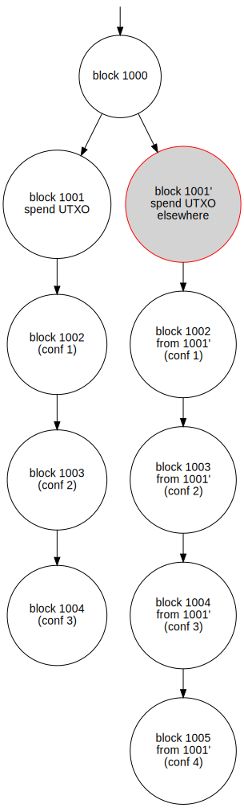
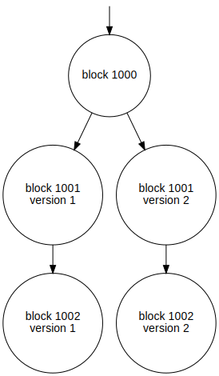
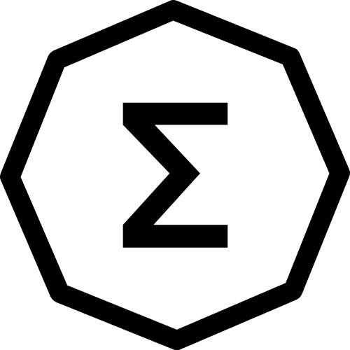
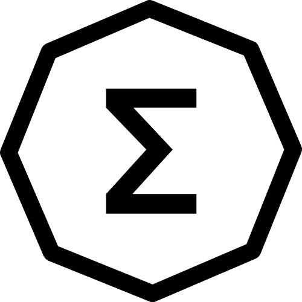

CS 4970
Cryptocurrency
Mining
Disclaimer
- All the numbers shown here were accurate and current as of the time this slide set was updated
- February 12, 2025
- But they may have changed since then
- However, the RVN & BTC difficulty is from much earlier blocks
- Otherwise, they are (generally) consistent throughout the slide set
- And the exact numbers don’t matter as much to explain the concepts
Coins we’ll study
 Bitcoin: we all know this
Bitcoin: we all know this
- Hash algorithm: double SHA-256
 Ravencoin
Ravencoin
- A fork of Bitcoin, so works similarily; focuses on tokens
- Designed to be ASIC resistant
- Hash algorithm: kawpow (16 different rotating algorithms)
 Ethereum
Ethereum
- A generational improvement over Bitcoin
- Allows for much more complicated programs
- Hash algorithm: Keccak-256 (aka SHA3)
- It just moved to proof-of-stake
Why a higher difficulty?
- As more people mine – to get the reward – the time between blocks decreases
- Each coin is designed to have a fixed time between blocks
- Bitcoin: 10 minutes; Ravencoin: 1 minute; Ethereum: (previously) 12-15 seconds
- Mining too fast will exhaust the available coin and and devalue the coin’s value
How to make it more difficult
- Force the hash of the mined block to have a certain number of leading zeros
- In Ravencoin block 3,714,773: 000000000000 9847addedabc03b320a9545175d969c7cf23dc9b862f301453cc
- 12 leading hex zeros, 48 leading bits
- In Bitcoin block 883,513: 00000000000000000000 d8dba3009cc023e03220d0ec6e5e3285e15ba0d9f0dd
- 20 leading hex zeros, 80 leading bits
Random nonces
- Consider a random nonce to generate a hash value
- You would expect that half (50%) would have a leading 0 bit, and the other half would have a leading 1 bit
- Expectation is that 1/4 (25%) have two leading 0 bits
- Expectation is that 1/8 (12.5%) have three leading 0 bits
- Expectation is that \(\frac{1}{2}^n\) have \(n\) leading 0 bits
- Thus…
-
RVN example: \(\frac{1}{2^{48}}\), which is 1 in 281 trillion (\(2.81 \ast 10^{14}\)), would have 48 leading 0 bits
-
BTC example: \(\frac{1}{2^{80}}\), which is 1 in 1.2 septillion (\(1.2 \ast 10^{24}\)), would have 80 leading 0 bits
Mining: nbits
- The nbits field is a 8-digit (32-bit) hex number, such as: 0x1b00a908
- It’s like an enocded floating point number
- The first 2 digits (1b) is the exponent; convert to decimal and subtract 3
- \(0x1b -3 = 27-3=24\)
- This means there will be 24 trailing 0x00 bytes (48 zero hex digits)
- The last 6 digits of the nbits are the mantissa: 0x00a908
- We left-fill with 0’s to 256 bits (64 hex digits)
- With 48 trailing zero digits and 6 exponent digits, that leaves us 10 leading 0x0 hex digits (5 0x00 bytes)
- This gets us: 0x000000000000a90800000000000000000 0000000000000000000000000000000
Mining: nbits & target
- An nbits field of 0x1b00a908 thus gets us a target of 0x000000000000a908000000000000000 000000000000000000000000000000000
- That target requires 12 leading zero hex digits (48 leading binary zero bits)
- Chance to find: \(\approx 1/2^{48}\)
- The first RVN target (RVN block 1) was 0x1d00ffff = 0x00000000ffff00000000000000000000 00000000000000000000000000000000
- Chance to find: 1 in \(2^{32}\) or 1 in 4.3 billion
- Note that some incorrectly report it as 0x1e00fff
Mining: targets & difficulty
- If you divide the original target by the current target, you get the difficulty
- How many times harder the current block is than the original block
- For RVN block 1,982,364, that’s about 99,253.60
- To avoid confusion, I will refer to this as network difficulty
- You can see the current RVN network difficulty
- This page at the Bitcoin wiki describes difficulty computation in more detail (and provides C++ code)
Miner reported difficulty
- Another way to look at it:
- Let \(d_n\) be the network difficulty (say, 100k)
- Let \(d_o\) be the original difficulty of block 1 (\(2^{32}=4.29G\))
- The current target is as hard as the product of those two: \(t = d_n * d_o\)
- For RVN block 1,982,364, the network difficulty was 100.3417k
- (RVN historical difficulty can be found here)
- Making the target as hard as \(100k * 4.3G = 4.29T\)
bdiff versus pdiff
- The first RVN & BTC target was 0x1d00ffff = 0x00000000ffff0000000000000000000000 000000000000000000000000000000
- This is the exact expansion of the nbits value
- That yields a difficulty of 99,253.59955
- This is bdiff (think: bitcoin-diff)
- Traditionally it was represented as a target of 0x00000000ffffffffffffffffffffffffffffffffffffffffffffffffffffffff
- This is a “non-truncated target”, and usually the values used by mining pools
- That yields a difficulty of 99,255.11406
- This is pdiff (think: pool-diff)
Mining pools
- The chance of you getting a Bitcoin block is really low
- But if you team up with other people, you can all contribute, and if the group gets a block the reward is distributed among the members
- This is a mining pool
- For Proof-of-Work (PoW) coins, members get a percentage of the value of the pooled profit based on the amount of work they put in
- But how to compute that?
Miner reported difficulty
- A mining program will report the difficulty of a share
- For now, a share is a nonce found that has a lot of leading 0’s, even if it is not enough to solve the block
- “134.25 T”, for example
- I’ll refer to this as the share difficulty, or \(d_s\), to avoid confusion
- Share difficulty is set by the mining pool
- If a share requires 42 leading zero bits, then it would report a share difficulty of \(2^{42} = 4.4\) T
- 44 leading zero bits yields a share difficulty of \(17.6\) T
- The target for RVN block 1,982,364 needed 48 leading zero bits
Mining shares
- Any good nonce is reported to the mining pool, even if it is not enough to solve the block
- Consider the 2miners RVN mining pool, which has pdiff (pool mining difficulty) of 4.295 G
- So any nonce found that has a difficulty of \(4.295\) G$ = 4.295 * 10^9$ or higher will be reported to the mining pool
- It is thus expected to take \(4.295G = 2^{32}\) hashes to get a share
- So a 50 Mh/s GPU (the Nvidia 3090) would expect to get a share every 85.9 seconds
- The share value keeps the bandwidth to the mining pool down while also allowing an estimate of the work performed
How much is mining killing the Earth?
- Consider the Avalon A1466 miner
- It uses 3,230 W and produces 150 Th/s
- That’s 46.4 Gh/W, which is not super efficient any more
- 3,230 W for 24 hours/day yields 77.5 kWh
- At Charlottesville’s electric rates (15¢ per kWh) that’s $11.67 per day
- This site estimates that the current world-wide BTC hash rate is 804 million Th/s
- If it were only Avalon A1466 miners, then we need 5.37 million such miners, at 150 Th/s, to get 804 million Th/s
- That’s 17.4 GW (\(10^{12}\)W), or 416 GWh per day, or about 152,000 GWh (152 TWh) per year
Death to the Environment!

- The lower-bound estimate from the last slide is that BTC mining uses 17.4 GW (\(10^{12}\)W), or 416 GWh per day, or 152 TWh per year
- That is more than 171 of the world’s 218 countries (source)
- That is the equivalent to 2% of the total US electrical usage per year (source)
Death to the Environment!
- These computations:
- Assume that all the BTC mining is as efficient as the Avalon A1466 miner
- To little efficiency and money is lost, not gained
- Do not factor in the other mined coins
- So perhaps the actual amount is twice our initial estimate?
- That is the equivalent to 4% of the total US electrical usage per year (source)
- That’s 166 TWh per year
- But that’s a total guess, though!
Can mining not kill the environment?
- Yes!
- Use renewable resources, or pay carbon offsets
- But many entities mine Bitcoin for the profit, and these things often lessen the profit
- So few do this
Worldwide power consumption
- In 2021, the world used 25,343 TWh of electricity (source)
- The US used 3,979 TWh (15.7% of total)
- Only China was higher at 7,806 TWh (30.8% of total)
- We guessed that cryptocurrency mining uses 166 TWh per year
- That is 0.63% of the worldwide total energy usage
Mining profitability
- Bitcoin mining is profitable at scale
- Reasons:
- Significant price discount when buying miners in bulk
- Industry pays much less for electricity
- Tariffs can be avoided easier
- Heat can be re-used for other purposes
BTC mining in the US

Mining
- In order for transactions to occur, there has to be a way for some entity to “certify” a block
- So far the only certification method we’ve seen is proof-of-work mining
- But how to decide who gets to do it?
- Since there is a reward involved, everybody wants to be that one entity!
Proof of Work (PoW)
- This is what we’ve seen so far:
- Find a nonce (and transaction order) to get the hash less than the target
- The successful miner has shown s/he has done the work…
- … or just been lucky enough…
- … to “complete” the block
Proof of Work (PoW) issues
- High energy usage
- Environmental issues as a result
- It’s not a “green” solution by any means
- Can cause bottlenecks when there is a lot of activity
- Not (currently) a problem for Bitcoin
- It was before witnesses were added, though
- Bit it’s a problem for “things” that runs on top of Ethereum
“Useful” Proof-of-Work (PoW)
- Use computing power for some “good”
 Example: Primecoin, launched in 2013
Example: Primecoin, launched in 2013
- Purpose: generate primes for mathematical and scientific study
- Whitepaper
- Time between blocks: 1 minute
- Difficulty change is for each block (not 2 weeks)
- Generates two types of primes sequences: Cunningham chains and Bi-twin chains
Cunningham chain
- Of the first kind: length \(n\) sequence \((p_1, \ldots, p_n)\) such that: \(p_{i+1} = 2p_i+1\)
- Each prime is one more than twice the previous
- Example: 2, 5, 11, 23, 47
- Of the second kind: length \(n\) sequence \((p_1, \ldots, p_n)\) such that: \(p_{i+1} = 2p_i-1\)
- Each prime is one less than twice the previous
- Example: 19, 37, 73
- Generalized: length \(n\) sequence \((p_1, \ldots, p_n)\) such that: \(p_{i+1} = a \ast p_i + b\)
Bi-twin chain
- A sequence of primes of the form:
- \(n-1,n+1,2n-1,2n+1,\ldots,2^kn-1,2^kn+1\)
- Must have an even number of terms
- All examples are really large numbers…
ASIC mining

- Some cryptocurrencies use hash algorithms that special-purpose hardware can mine
- ASIC = application-specific integrated circuit
- Bitcoin, Ethereum (before the ETH2 upgrade)
ASIC-resistant mining
 Consider Ravencoin, which aims for ASIC-resistant mining
Consider Ravencoin, which aims for ASIC-resistant mining
- It uses 16 different hash algorithms
- The last 8 digits of the previous block’s hash determine which 8 algorithms to use
- That’s a LOT of hashes, and it is very power-intensive
- Many are skeptical of it’s ASIC-resistance
- If it were valuable enough, I’m sure somebody would develop an ASIC for it
- The developers regularly update the algorithm to try to maintain ASIC-resistance
- Original algorithm was x16r, then x16rv2, and now kawpow
Lite Hash Rate (LHR)
- Nvidia makes graphics card GPUs
- And everybody was buying their cards to mine cryptocurrency
- Which priced out their primary market: gamers
- Nvidia’s previous solution: create LHR cards
- Make the card recognize mining of Ethash, and “lock” the GPU for 20 seconds
- But this only affects Ethash, not any other mining algorithm!
- Mining programs figured out how to dual-mine
- It mines Ethash at half GPU usage and another coin for the other half
- Nvidia gave up on this in May 2022 and removed LHR in recent drivers
Terminology
- The act of certifying a block is called different terms with different certification mechanisms
- Technically mining is certification on a proof-of-work blockchain
- But, more generally, it encompasses any type of block certification
- Other terms: signing, validating, etc.
Proof of Authority (PoA)
- A small set (possibly singleton) of accounts are signers
- They form a clique
- One signer signs a block
- Then a majority (>50%) of the clique must agree
- Not great for a decentralized cryptocurrency!
- Our course blockchain uses this
- The clique was defined in the genesis.json file
- It makes mining (aka signing) much easier in a development setting
- Biggest uses: test networks, development environments, course blockchains
Proof of Stake (PoS)
- Those with a stake in the cryptocurrency…
- … meaning they hold enough of it…
- Can be the ones to present a certified block to the network
- They put their cryptocurrency “on the line” to vouch for the validity of the block
- And they get the miner reward
- This is called staking
- But what if the block is invalid?
- Then the certifier loses some of their cryptocurrency
- While not unknown, it rarely happens
- Those who can certify blocks are called validators
Proof of Stake (PoS)
- The network chooses the validators based on:
- Amount of currency held
- Length of currency held
- Implementations vary by cryptocurrency
- Those with less “stake” will be validators less often
- Coins that use this: Tezos, Cosmos, Peercoin, Tendermint, the ETH2 upgrade
- ETH2 requires a minimum of 32 ETH to participate in PoS
 Ethereum and PoS
Ethereum and PoS
- Originally Ethereum was proof-of-work (hash algorithm: Ethash)
- It had a difficulty bomb, aka “Ice Age”
- At certain block numbers, the difficulty increases significantly
- See this graph from the above link
- Purpose: to force the developers to either:
- Migrate it to a later date (as has happened so far)
- Change to PoS (in the works for some time now)
- The new Ethereum PoS proposal is called ETH2
- Or the Paris Network Upgrade or the Casper protocol
- It went live on September 15, 2022
 Ethereum’s move to PoS
Ethereum’s move to PoS
- Phase 0: December 2020: create the “Beacon Chain”, a PoS blockchain
- Phase 1: September 15, 2022: change Ethereum from PoW to PoS
- Phase 2: sometime in
2023 2024 2025?: allow shards
 Peercoin
Peercoin
- First implementation of PoS, from 2012
- Consider coin age, measured in coin-days
- 90 coins held for 10 days is 900 coin-days
- Mining a block consumes the coin-days
- Thus, those with a lower number of coins will eventually be able to mine a block
 Peercoin
Peercoin
- Weakness: buy a lot of Peercoin, and wait a long time
- You can then mine many successive blocks, using a portion of your coin age each time
- Then execute a 51% attack (we’ll see this shortly)
- Solution: checkpoints
- Basically a periodic (few times per day) proof-of-work mined block
- The nodes all agree on the “offical” blockchain, which then is immutable
Nothing-at-stake-problem
- Consider a fork in the blockchain due to two simultaneously mined blocks
- This will happen occasionally!
- Which one chain should a validator mine for?
- Ideal strategy: mine both
- In PoS, it is not computationally demanding to mine both
- This way you don’t mine the eventual “wrong” chain, and then not get the reward
- With PoS, there is nothing at stake to prevent mining both chains
- This can make double-spend attacks more feasible, as duplicate chains are not removed quickly
Nothing-at-stake problem
- All coins must address this somehow
- ETH2:
- Part of your stake is a “deposit” on the validity of the block
- If that block does not make it into the full block chain, you lose that deposit
Staking
- Let’s say you wanted to be a validator for a PoS coin
- If you had more of that coin…
- … you could be “chosen” as the validator more often
- … and thus get more of the validator reward
- So you might “rent” coins from others to increase your balance
Staking
- If you have some of a coin, you could “loan” it to others so they can better participate in PoS
- This is also called staking
- Advantages:
- You get a payout: maybe 5% of your “loan” per year
- Disadvantages:
- You can’t get your “stake” back early
- A good choice if you definitely are not going to sell in the near future
Staking Legality
- On Feb 3, 2022, the IRS said it will not tax unsold, staked crypto (source)
- You still pay when you sell it, of course
- Such coins are “new property” not “income”
- Once sold, presumably you would pay taxes on it similar to how you pay taxes on interest
- But that was not mentioned in that article…
Proof-of-History
- In
 Solana (SOL) the block verification combines PoS and proof of history (Solana’s whitepaper)
Solana (SOL) the block verification combines PoS and proof of history (Solana’s whitepaper)
- Each transaction has a hash of another transaction
- This proves that the TXN happened after the “other” transaction
- This forms a chain (graph, really) of events in time
- The blocks (maybe TXNs?) also have an actual timestamp
- This graph is:
- Directed (any TXN points to a previous TXN)
- Acyclic (you can’t have a loop in time)
- Thus, the validator can always find the topological sort of a set of TXNs
- Which means we can sequence them in the signed block
PoH and block verification
- With
 Bitcoin, we have to compute the Merkle tree hash
Bitcoin, we have to compute the Merkle tree hash
- Given \(n\) transactions, it takes \(\Theta(n)\) steps to build the tree
- Given infinite computing power, it takes \(\Theta(\log n)\) steps
- In
 Solana, each transaction can be verified in parallel
Solana, each transaction can be verified in parallel
- Just check that it goes one link back to another valid TXN
- Given \(n\) transactions and an infinite computing power, it can be done in \(\Theta(1)\) time
- A GPU can have 4,000 cores, and each can verify one TXN in parallel
- Okay, not infinite, but still quite fast
Proof-of-Capacity
- aka Proof-of-replication (PoRep), proof-of-storage, etc.
- You allocate a certain amount of “capacity” to store the blockchain
- Depending on amount, you are likely not holding all of the blockchain
- But all parts of the blockchain are on many machines
- Benefit: in the case of a failure, the “storage” – in the blockchain – is replicated
- You pay to store data in the blockchain
 Example: Storj
Example: Storj
Proof-of-spacetime
- Spacetime means allocating space over a period of time
- And is not related to Einstein’s spacetime from relativity
- Like proof-of-capacity, but…
- Your reward is based on the amount of space dedicated times the amount of time
 Example: Filecoin
Example: Filecoin
Neoxa: “Proof-of-Game”
- This is not a block certification method!
- They just wanted to use the “proof-of-X” moniker
- Neoxa’s whitepaper
- Intent is to reward video game players for actions taken in the game itself
- Pro: trying to get in early on the intersection of games and cryptocurrency
- Cons: so many to list here, where to start?
“Green” coins
- Generally, any coin that is not proof-of-work
- Possibilities:
- Proof-of-stake, like ETH2 and Peercoin
- Proof-of-{capacity, replication, spacetime}, like Storj and Filecoin
- Does not require proofs, such as
 Stellar Lumens (XLM)
Stellar Lumens (XLM)
- There were also some pro-environment coins
- That gave rewards for, say, producing renewable energy
- Difficult business model, so most have floundered
Consider…
- The first few blocks of an arbitrary cryptocurrency…
- Here is the genesis block:

The first block mined
 Block 0 is on the top, block 1 is on the bottom
Block 0 is on the top, block 1 is on the bottom
Two blocks mined
 We’ve just mined block 2
We’ve just mined block 2
A transaction

 Note that UTXOs are not only in the bottom level
Note that UTXOs are not only in the bottom level
Realism
- Most (all?) cryptocurrencies are mined by the developers for the first many blocks
- Ethereum’s first non-mining transaction was in block 46,147
- Bitcoin only had a few hundred accounts in the first 50,000 (or so) blocks
- But the previous images of the DAG still show the concepts of having many transactions
DAGs
- The entire transaction list is a directed acyclic graph
- In order to successfully mine, this has to be kept in memory
- as that tells you if a UTXO has already been spent or not
- Optimization: use hash tables (or similar)
- Map a UTXO to the amount it makes available
- And only keep track of the unspent UTXOs
- So not really a DAG, then…
DAG size
- You can see DAG sizes at https://minerstat.com/dag-size-calculator
- Consider Ravencoin, whose DAG is currently at 4.87 Gb (as of Feb 2025)
- Based on the expected DAG growth…
- 5 Gb GPUS will no longer be able to mine it around May 2025
- 6 Gb GPUS will no longer be able to mine it around Mar 2027
- source
Double spending
- Definition: when one submits two TXNs spending the same UTXO
- Prevented by:
- The “valid block check” that miners & nodes perform checks for
- Non-malicious nodes will not vote to approve a node that double spends
- Or that spends an already-spent UTXO
- In Bitcoin: having a witness hash for a transaction that cannot be changed
51% attack

- This is an attack primarily on PoW blockchains
- But still possible on PoS blockchains as well
- Given the initial state in some block, say 1000
51% attack

- Mallory spends a UTXO
- On something that has a quick delivery, such as a digital asset
- Or a in-person transaction where she takes possession of a physical item
51% attack

- Seller waits some number of confirmations…
- Say, 3 (in reality, likely many more)
- Then the seller assumes the TXN will not change
- Because there have been the desired number of confirmations
- The digital asset is then sent
- Or the physical item changes hands
51% attack

- The original spender tries to spend the UTXO again
- Node adoption policy: longest chain
- The longest “chain” of blocks, starting from the genesis block, is the valid chain
- But how to make the rest of the network accept the second spending of the UTXO?
- Make that second TXN part of the new longest chain
51% attack

- But how to make the rest of the network accept it?
- Make that second TXN part of the new longest chain
- Solution
- Have to mine more than the rest of the network
- Thus, must have 51% (or more) of the network mining capability, hence the name
- If the attacker…
- Who has 51% (or more) of the mining power…
- … can ever create the longest chain…
- Then they have “double spent” the UTXO!
- Not true double spending, but close…
Longest Chain Adoption Policy
- Miners are incentivized to always accept the longest chain as the “valid” chain
- That chain has the greatest chance of becoming the “accepted” chain
- After a certain number of confirmations
- Any blocks mined on a different (and shorter) chain yield no reward, since their mined coins are not part of the longest chain
- No reward means no incentive
51% attack
- But is this viable?
- But a mining pool might for other cryptocurrencies
- Consider the
 Ravencoin pool from 2miners
Ravencoin pool from 2miners
- See what percentage they have now by dividing the pool hash rate by the network hash rate
- On June 27th, 2021, they had over 51% (source)
- Due to a purchase of hashpower from (likely) Nicehash
 Firo had one in January 2021
Firo had one in January 2021 Bitcoin Gold had one in May 2018 and January 2020
Bitcoin Gold had one in May 2018 and January 2020
Required confirmations

- Envision: we have two longest chains, and miners are split between the two
- Neither has yet become “longer”
- What if the miner for block 1001, version 1, were to immediately spend those mined coins
- And then the version 2 chain were to become the longer (and thus accepted) chain?
- Solution: wait until \(n\) confirmations have occurred before allowing spending of the BTC
Confirmations
- Number of confirmations typically required (via 2miners):
 XLM: 0 blocks (5 seconds) (TXNs are irreversible)
XLM: 0 blocks (5 seconds) (TXNs are irreversible) BTC: 6 blocks (about 1 hour) for “standard” transactions
BTC: 6 blocks (about 1 hour) for “standard” transactions ETH: 240 blocks (about 1 hour) (maybe different w/PoS)
ETH: 240 blocks (about 1 hour) (maybe different w/PoS) RVN: 100 blocks (about 2 hours)
RVN: 100 blocks (about 2 hours) FIRO: 100 blocks (about 9 hours)
FIRO: 100 blocks (about 9 hours) BTC: 60 blocks (about 10 hours) for “large” transactions
BTC: 60 blocks (about 10 hours) for “large” transactions- ERG: 720 blocks (about 1 day)
- This is based on many factors: block speed, overall network hash rate, and the value of the coin
Cryptocurrency “Forks”
- There are four different meanings of “fork” with regard to cryptocurrencies
- Uncle / orphan / ommer blocks
- Soft fork
- Hard fork
- Source code fork
Type 1: Uncle / Orphan / Ommer

- Given a starting block number (here, 1000)
Uncle / Orphan / Ommer blocks

- Given a starting block number (here, 1000)
- A miner mines a given transaction \(x\) into block 1001
Uncle / Orphan / Ommer blocks
- Given a starting block number (here, 1000)
- A miner mines a given transaction into a block
- But another miner mines a different block without that TXN
Uncle / Orphan / Ommer blocks
- Given a starting block number (here, 1000)
- A miner mines a given transaction into a block
- But another miner mines a different block without that TXN
- That other block gets a confirmation
Uncle / Orphan / Ommer blocks
- Given a starting block number (here, 1000)
- A miner mines a given transaction into a block
- But another miner mines a different block without that TXN
- That other block gets a confirmation
- And then one more
Uncle / Orphan / Ommer blocks

- Given a starting block number (here, 1000)
- A miner mines a given transaction into a block
- But another miner mines a different block without that TXN
- That other block gets a confirmation
- And then one more
- Eventually the block with the TXN is discarded
- As it is not part of the longest chain anymore
Uncle / Orphan / Ommer blocks
- Bitcoin calls these orphan blocks or orphan nodes
- Ethereum used to call them uncle blocks or uncle nodes
- But that is gender-specific
- Now they are called ommer blocks or ommer nodes
- Ommer is a gender-neutral version of aunt or uncle
- But not a native English word
- Like “sibling” instead of brother or sister
- What happens to that TXN?
- Other miners will likely pick it up
- Wallet software (or equivalent) will re-send it if it “disappears”
- Or at least notify you that it was not mined
- This is an issue if we all could mine the blockchain in this class
- There is no effective way to ensure it is not discarded
How to handle?
- Bitcoin’s orphan blocks: once it is no longer part of the longest chain, is completely discarded
- Reason: with 10 minute block time, this is much less likely to occur
- Thus, no reward for the miner of the orphan block!
- Ethereum’s ommer blocks, when PoW: not fully discarded
- Miners still get a reward, albeit much smaller
- The EVM keeps them around in memory
- They are not the canonical “truth” of the blockchain, though
- Reason: with a 15 second block time, this is much more likely to occur
- They cannot happen on our proof-of-authority blockchain
- Many others are based on Ethereum’s strategy
Type 2: Soft forks

- Non-token crypto-currencies usually have a group of developers
- Occasional changes are made to the protocol / mining algorithm / etc.
- Bitcoin via BIPs, Ethereum via EIPs, etc.
- Sometimes called a consensus fork
- Generally, all the uses of the cryptocurrency (eventually) adopt the change
- These forks are backward-compatible
- At least until everybody switches over
Soft forks
- How to get all the miners to adopt it?
- Release the updated source code
- The agreed-upon change will state that at some point, all further blocks must have that change
- That point could be when:
- Some number (say, 75%) of the nodes have adopted this change
- After some date/time
- ETH 2: when the Total Terminal Difficulty reaches (or exceeds) exactly \(5.875*10^{22}\)
- Example: Bitcoin’s Segregated Witness from 2015
Type 3: Hard forks
 - A change is proposed that some users do NOT want to adopt - Or that is not backwards-compatible, so some users choose one way and some the other way
- A change is proposed that some users do NOT want to adopt - Or that is not backwards-compatible, so some users choose one way and some the other way
 Ethereum &
Ethereum &
 Ethereum Classic
Ethereum Classic
- June 2016: A well-known Ethereum organization had a programming bug that allowed millions to be drained from the account
- This endangered the perception and trust of the Ethereum as a whole
- We’ll see this error in detail in Blockchain Applications
- The fix: roll back the blockchain to before the hack to fix it
- This split the users; some didn’t want the fix
 Ethereum Classic is the blockchain without the fix
Ethereum Classic is the blockchain without the fix Ethereum is the blockchain with the fix
Ethereum is the blockchain with the fix
 Bitcoin Gold
Bitcoin Gold
- Hard fork of Bitcoin on October 24, 2017 (at block height 491,407)
- Reasons: change to an ASIC-resistant hash
- It’s had a lot of growing pains:
- Was hastily put together
- Had a developer pre-mine, which always looks shady
- Hit by 51% attack in May 2018; 388k BTG (about $18 million) was stolen; promptly de-listed from Bittrex
- Hit by a 51% attack again in January 2020
- In July 2020 an “emergency update” was released to counter yet another attack
Type 4: Source code fork
- You can make a new cryptocurrency by:
- Take a tested open source code base
- Make a the modifications you want
- The
 Ravencoin (RVN) source code is based off of the Bitcoin source code; created in 2018
Ravencoin (RVN) source code is based off of the Bitcoin source code; created in 2018
- Changes:
- 1000x as many coins
- 1 minute block time instead of 10 minutes
- Native support for assets
- Could be NFTs, but can represent any digital or physical item
- Different PoW hashes to be ASIC resistant
 Namecoin (2011)
Namecoin (2011)
- Namecoin (NMC) was created in 2011, also as a fork of Bitcoin
- Purpose: censorship-free domain DNS registration for the .bit top-level domain
- Anybody can transact with Namecoin to reserve a domain in .bit
- Fee: 0.01 NMC
- Reservation lasts 36,000 blocks (about 200 days) unless updated or renewed
- .bit domains are not widely supported
- Namecoin not very popular these days
- In 2015: 120k domains registered, but only 28 in use


 Solana (
Solana ( Bitcoin, we have to compute the Merkle tree hash
Bitcoin, we have to compute the Merkle tree hash


 
 


 - A change is proposed that some users do NOT want to adopt - Or that is not backwards-compatible, so some users choose one way and some the other way
- A change is proposed that some users do NOT want to adopt - Or that is not backwards-compatible, so some users choose one way and some the other way

{kind=link}
{kind=link}